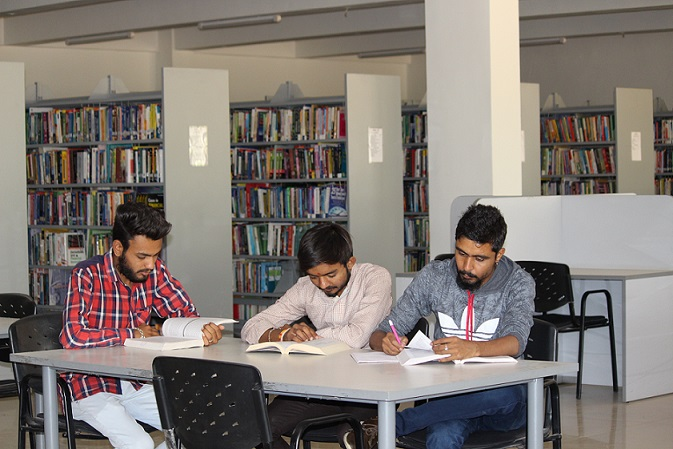

Library

Institute has a very rich resource center which is fully computerized using SOUL Integrated library Management
Software The Collection of the library is available online through WEB-OPAC facility of the SOUL software. The
edifice of library is very spacious and provides enough space for Reading, Video Viewing, Newspaper Clipping
and Internet Surfing. The resource center is constantly being updated with new books of Computer Application
Information Technology, GK, Communication Skills etc as well as with National and International Journals, Publications,
Periodicals, Magazines etc.Library is fully Wi-Fi Connected with INTERNET at all node of the library for
the Purpose of access of E-Journals, Educational Resources During all the working hour s of the Library
Library Resource Center serves as a creative and innovative partner in supporting the teaching, learning and re
search related activities of the Institute. With the state-of-the-art facilities, the Resource Center is contributing to
the Institute's mission of becoming the one of the best Institutes in the areas of Information and Technology.
The collection of the Resource Center is rich and diverse. Collection encompasses subject of computer science,
information technology, communication skills, GK and related areas. This collection includes, books,, reference
books, tutorials CD&DVDs. Resource Center has more than 15000 books, 1900 CD's/DVDs and subscription of
number of national and international journals, magazines and periodicals. Collection of Resource Center is grow-
ing rapidly and we hope to add more and more resources every year.
Last Page Updated: Sat, 27-Jun-2020, 01:07:54 pm